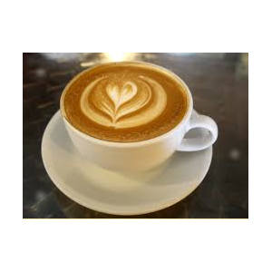

Coffee Menu Assortment

We carry:
Espresso (E)
Americano (A)
Latte (L)
Cappuccino (C)
- Arabica
- A species of Coffea originally indigenous to the mountains of the southwestern highlands of Ethiopia. It is known as the
coffee shrub of Ararbia
.
- Robusta
- Commonly known as Robusta coffee, is a species of coffee that has its origins in central and western sub-Saharan Africa.
Explanation of the differences betweetn Arabica and Rousta (opens in a new window)